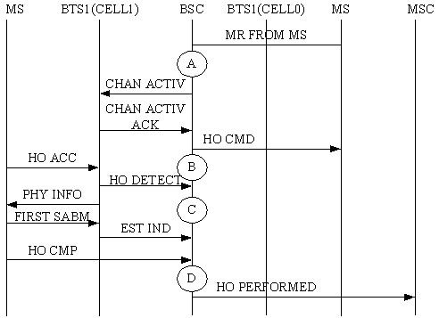

Measurement Counter
H3240:CELL_INTRABSC_INCELL_HO_DETECT_SD
H3247:CELL_INTRABSC_INCELL_HO_DETECT_TCHF
H3248:CELL_INTRABSC_INCELL_HO_DETECT_TCHH
H32aa:CELL_INTRABSC_INCELL_HO_DETECT_BSC_LOOP
H32ab:CELL_INTRABSC_INCELL_HO_DETECT_BTS_LOOP
Description
The incoming internal inter-cell handover procedure is as follows:
- After receiving the measurement report from the MS, the BSC determines to initiate a handover and allocates the channels in the target cell, and then sends an HO CMD message to the MS in the originating cell.
- After receiving the HO CMD, the MS sends an HO ACC message to the BTS of the target cell to try to access the new cell. The BTS of the target cell sends this information in an HO DETECT message to the BSC, and sends a PHY INFO to the MS. 
- The MS sends a FIRST SABM frame, and the BTS of the target cell sends an EST IND message to notify the BSC of the successful access to the target cell.
- The MS sends an HO CMP message to the BSC on the channel in the target cell, and the BSC sends an HO PERFORMED message to the MSC. Thus, the incoming internal inter-cell handover is complete.
The specific counter provides the number of HO DETECT messages received by the BSC from the BTS during the incoming internal inter-cell handover procedure. Together with the Incoming Internal Inter-Cell Handover Requests and the Incoming Internal Inter-Cell Commands, this counter determines the incoming internal inter-cell handover performance. Together with the counters related to the outgoing internal inter-cell handover, this counter determines the internal inter-cell handover performance.
- The following counters are measures based on the channel type (SDCCH, TCHF, or TCHH):
- H3240:CELL_INTRABSC_INCELL_HO_DETECT_SD
- H3247:CELL_INTRABSC_INCELL_HO_DETECT_TCHF
- H3248:CELL_INTRABSC_INCELL_HO_DETECT_TCHH
- The following counters are measured based on the loopback type (BTS loopback or BSC loopback):
- H32aa:CELL_INTRABSC_INCELL_HO_DETECT_BSC_LOOP
- H32ab:CELL_INTRABSC_INCELL_HO_DETECT_BTS_LOOP
Unit
Integer number or integer.
Measurement Point
As shown in Figure 1, the specific counter is measured at C in the target cell when the BSC receives from the BTS the HO DETECT message in the target cell.
Figure 1 Measurement of counters related to the incoming internal inter-cell handover A
|
Measurement point of Incoming Internal Inter-Cell Handover Requests
|
B
|
Measurement point of Incoming Internal Inter-Cell Handover Responses
|
C
|
Measurement point of Incoming Internal Inter-Cell Handover Detection Messages Received by BSC
|
D
|
Measurement point of Successful Incoming Internal Inter-Cell Handovers
|
Formula
This is an original counter without involving any formula.
Copyright © Huawei Technologies Co., Ltd.